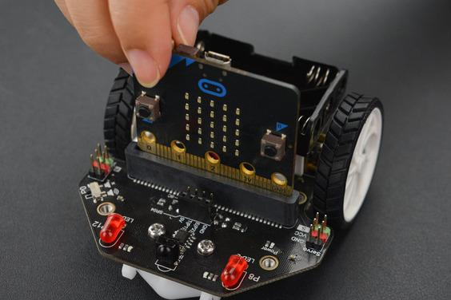
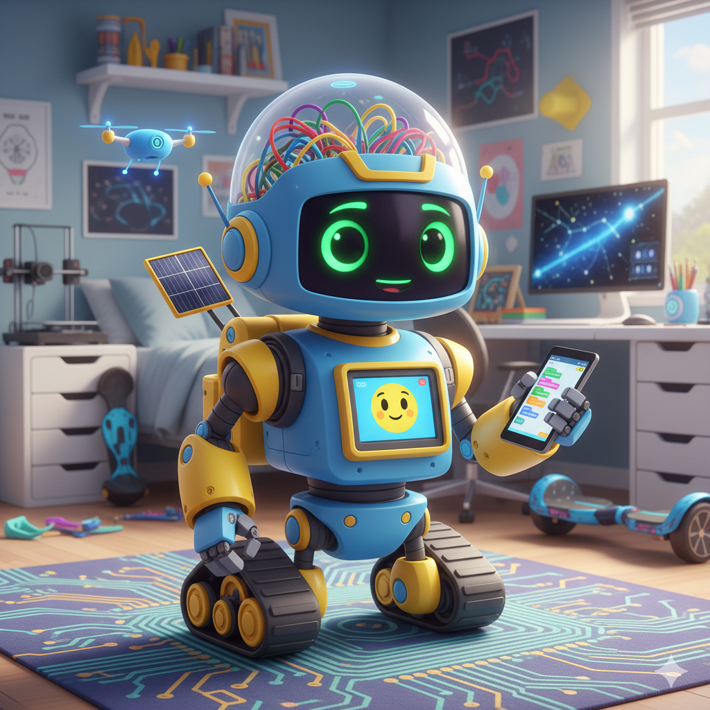
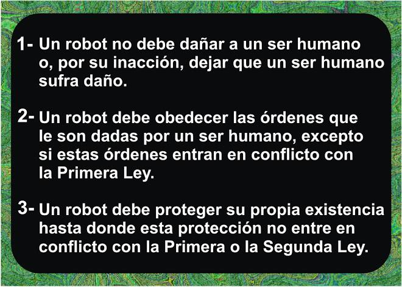
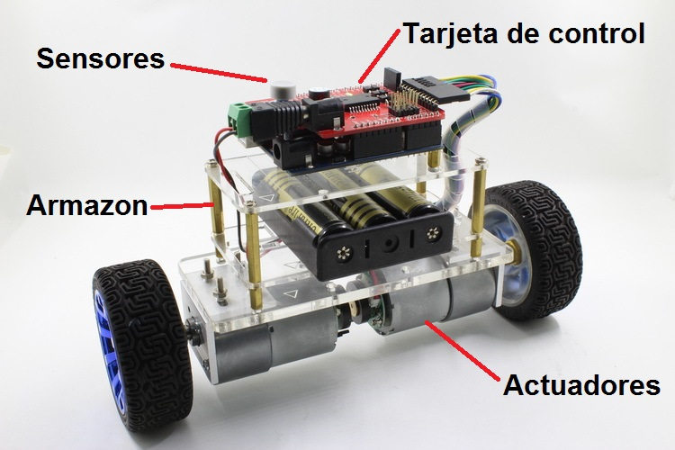
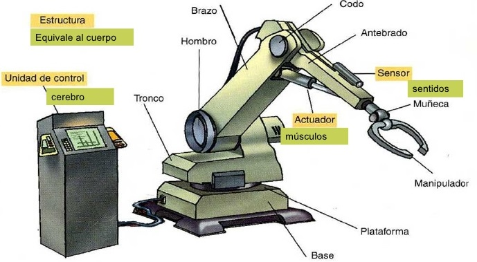
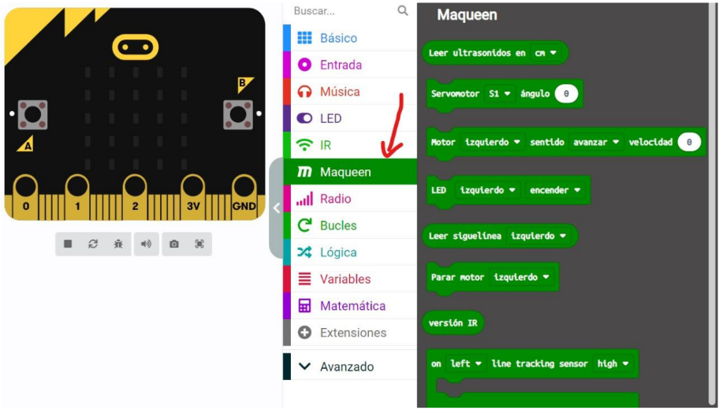

¡Construye y Programa tu Propio Robot!
¿Alguna vez has soñado con tener tu propio robot? ¡En esta unidad, ese sueño se hará realidad! Vamos a sumergirnos en el emocionante mundo de la robótica, donde aprenderás a construir, programar y hacer que los robots cobren vida.
Utilizaremos la placa Micro:Bit como el "cerebro" de nuestros robots y el chasis Maqueen para darles movimiento y añadirles accesorios. ¡Prepárate para ver cómo tus ideas se transforman en máquinas que interactúan con el mundo real!

- - ¡Nuestras herramientas para construir robots!
1. ¿Qué es un Robot?
Un robot es una máquina programable que puede realizar tareas de forma autónoma o semiautónoma. Los robots están diseñados para interactuar con el mundo físico, ya sea moviéndose, manipulando objetos o recogiendo información.
No todos los robots tienen forma humana. Un robot puede ser una aspiradora que limpia tu casa, un brazo en una fábrica que ensambla coches, o incluso un pequeño coche como Maqueen que sigue una línea.
Características clave de un robot:
- Programable: Recibe instrucciones para realizar tareas.
- Interactúa con el entorno: Usa sensores para "sentir" y actuadores para "actuar".
- Autonomía: Puede realizar tareas sin intervención humana constante.

- - ¡Los robots están por todas partes!
¡Actividad Práctica! Piensa en 3 ejemplos de robots que conozcas (reales o de ficción) y explica brevemente qué tarea realizan.
2. Las Leyes de la Robótica: ¡Robots Responsables!
Para asegurar que los robots sean seguros y beneficiosos para los humanos, el escritor de ciencia ficción Isaac Asimov propuso tres Leyes de la Robótica. Aunque son de ficción, nos hacen pensar en la importancia de la ética en el diseño de robots.
- Primera Ley: Un robot no hará daño a un ser humano o, por inacción, permitirá que un ser humano sufra daño.
- Segunda Ley: Un robot debe obedecer las órdenes dadas por los seres humanos, excepto si estas órdenes entran en conflicto con la Primera Ley.
- Tercera Ley: Un robot debe proteger su propia existencia en la medida en que esta protección no entre en conflicto con la Primera o Segunda Ley.
Estas leyes nos recuerdan que la seguridad y el bienestar de las personas deben ser siempre lo más importante al crear tecnología.

- - Principios para robots seguros.
¡Actividad Práctica! Imagina un robot de limpieza que tiene que evitar chocar con tu mascota. ¿Qué Ley de la Robótica estaría aplicando principalmente? ¿Por qué?
3. Componentes de un Robot: ¡Siente, Piensa y Actúa!
Como vimos en la unidad de sistemas de computación, los robots también tienen partes de "entrada" y "salida" para interactuar con el mundo:
- Sensores: Son los "ojos", "oídos" y "tacto" del robot. Recogen información del entorno.
- Ejemplos en Micro:Bit/Maqueen:
- Sensor de línea: Detecta líneas oscuras en el suelo.
- Sensor ultrasónico (Maqueen): Mide distancias, detecta obstáculos.
- Sensor de luz (Micro:Bit): Mide la intensidad de la luz.
- Acelerómetro (Micro:Bit): Detecta inclinación y movimiento (agitación).
- Ejemplos en Micro:Bit/Maqueen:
- Actuadores: Son las partes que permiten al robot "actuar" en el mundo físico, realizando movimientos o produciendo efectos.
- Ejemplos en Micro:Bit/Maqueen:
- Motores (Maqueen): Hacen que el robot se mueva.
- LEDs (Micro:Bit/Maqueen): Producen luz.
- Zumbador/Altavoz (Micro:Bit/Maqueen): Produce sonidos.
- Servomotores (Maqueen): Permiten movimientos precisos de brazos o pinzas.
- Ejemplos en Micro:Bit/Maqueen:
- Efectores: Son las "manos" o "herramientas" del robot, la parte final del actuador que interactúa directamente con el entorno.
- Ejemplos: Ruedas (movidas por motores), pinzas (movidas por servomotores).

- - Sensores, Actuadores, Efectores.
¡Actividad Práctica con Maqueen! Conecta tu Micro:Bit a Maqueen. Programa Maqueen para que sus LEDs frontales se enciendan de un color cuando el sensor ultrasónico detecte un objeto cerca (menos de 10 cm).
4. Mecanismos de Locomoción y Manipulación
Los robots necesitan moverse (locomoción) y, a veces, interactuar con objetos (manipulación).
Mecanismos de Locomoción:
- Ruedas: El más común para robots móviles (como Maqueen). Permiten movimiento rápido y eficiente en superficies planas.
- Orugas: Como las de un tanque, ofrecen mejor tracción en terrenos irregulares.
- Patas: Para robots que necesitan caminar, subir escaleras o moverse en terrenos muy complejos.
- Hélices/Propulsores: Para drones o robots submarinos.
Mecanismos de Manipulación:
- Brazos robóticos: Con articulaciones que imitan el brazo humano, para agarrar, mover o ensamblar objetos.
- Pinzas: Para sujetar objetos de diferentes formas y tamaños.
- Ventosas: Para manipular objetos planos y lisos.

- - Cómo se mueven y actúan los robots.
¡Actividad Práctica con Maqueen! Programa tu Maqueen para que avance 50 cm, luego gire 90 grados a la derecha y avance otros 50 cm. ¡Intenta que forme un cuadrado!
5. Programación de Robots: ¡Dándole Órdenes a tu Máquina!
Programar un robot es darle las instrucciones para que realice sus tareas. Para Micro:Bit y Maqueen, usaremos el entorno de programación por bloques MakeCode, muy similar a Scratch.
Conceptos clave en MakeCode para Micro:Bit y Maqueen:
- Eventos: "al iniciar", "para siempre", "al presionar botón A", "al agitar".
- Salidas (Actuadores):
- Bloques de "Maqueen" para controlar motores (adelante, atrás, girar).
- Bloques de "Básico" para mostrar LEDs en la matriz de Micro:Bit.
- Bloques de "Música" para el zumbador.
- Entradas (Sensores):
- Bloques de "Maqueen" para leer sensores de línea o distancia ultrasónica.
- Bloques de "Entrada" para leer botones o el acelerómetro de Micro:Bit.
- Lógica y Bucles: Bloques "si...entonces", "repetir", "por siempre" (igual que en Scratch).

- - ¡Programa tu robot con bloques!
¡Actividad Práctica con Maqueen! Programa tu Maqueen para que siga una línea negra dibujada en el suelo. Utiliza los sensores de línea y los bloques de lógica para que el robot se mantenga sobre la línea.
Abrir Editor MakeCodeProyecto Final de Unidad: "Mi Robot Resuelve un Problema"
Para este proyecto, en equipos, diseñaréis, construiréis y programaréis un robot móvil utilizando Micro:Bit y Maqueen para resolver un problema del mundo real de forma sostenible.
Ideas de Proyectos (puedes elegir una o proponer la tuya):
- Robot de Detección de Obstáculos: Un robot que se mueve por una habitación y se detiene o cambia de dirección al detectar obstáculos, evitando colisiones.
- Robot de Entrega Simple: Un robot que sigue una ruta predefinida (ej. una línea) y se detiene en un punto específico para "entregar" algo (simulado con un sonido o luz).
- Robot de Alerta de Luz: Un robot que se mueve y, al detectar un cambio brusco de luz (ej. al entrar en una zona oscura), enciende sus luces o emite un sonido de alerta.
Tareas a Realizar (en equipo):
- 1. Diseño del Problema y Solución:
- Identificad el problema del mundo real que vuestro robot va a resolver.
- Describid cómo vuestro robot lo solucionará, qué acciones realizará y por qué es una solución sostenible (ej. ahorro de energía, eficiencia).
- 2. Construcción y Montaje:
- Ensamblad el chasis Maqueen y conectad la Micro:Bit.
- Añadid los sensores y actuadores necesarios para vuestro proyecto.
- 3. Programación en MakeCode:
- Programad la lógica del robot utilizando bloques en MakeCode.
- Aseguraos de que el robot utilice sus sensores para percibir el entorno y sus actuadores para responder.
- Utilizad estructuras de control (secuencias, bucles, condicionales) de forma eficiente.
- 4. Pruebas y Depuración:
- Probad vuestro robot repetidamente y corregid los errores (depuración) hasta que funcione correctamente.
- 5. Documentación y Presentación:
- Crear una breve documentación del proyecto (puede ser un informe corto, un póster digital o una presentación sencilla) explicando:
- El problema que resuelve el robot.
- Los componentes (sensores, actuadores, Micro:Bit, Maqueen) que habéis usado y por qué.
- Una explicación sencilla de cómo funciona vuestro código (los bloques principales).
- Demostrad el funcionamiento de vuestro robot ante la clase.
- Crear una breve documentación del proyecto (puede ser un informe corto, un póster digital o una presentación sencilla) explicando:
Criterios trabajados:
- 1.1. Comprender el funcionamiento global de los sistemas de computación física, sus componentes y principales características.
- 1.2. Reconocer el papel de la robótica en nuestra sociedad, indicando el marco elemental de trabajo de los mismos.
- 1.4. Comprender los principios básicos de ingeniería en los que se basan los robots.
- 3.1. Ser capaz de construir un sistema de computación o robótico, promoviendo la interacción con el mundo físico en el contexto de un problema del mundo real, de forma sostenible.
Cuestionario: ¡Demuestra lo que sabes de Robótica!
Responde a las siguientes preguntas para comprobar lo que has aprendido en esta unidad.